Board mit PSRAM
Für Module mit 8 MB PSRAM. Der Start-Log zeigt dann „Found 8MB PSRAM device“.
Ein Labornetzteil, das seine Energie aus einem USB-C-Ladegerät zieht. Mit einem Netzteil nach USB PD 3.1 (EPR) liegen am Eingang bis zu 48 V und 5 A an. Eine GaN-Buckstufe macht daraus eine einstellbare Spannung, geregelt nach Spannung und Strom. Ohne Netztrafo, ohne Lüfter.
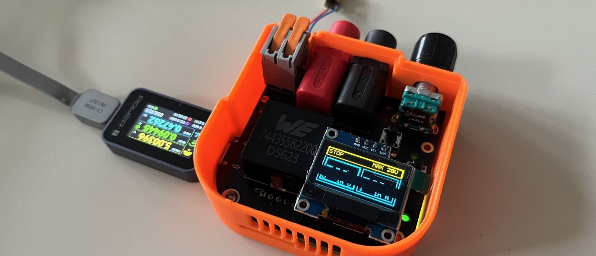
Das Gerät verhandelt mit dem Netzteil selbst die passende Spannung und regelt den Ausgang auf den Sollwert.
Der HUSB238A handelt mit dem Netzteil aus: fest 5 bis 20 V, EPR 28, 36 und 48 V, dazu PPS, AVS und EPR-AVS. Die Firmware wählt beim Einstellen selbst das passende Profil.
Synchroner Abwärtswandler mit der GaN-Halbbrücke LMG5200 bei 250 kHz, einer 22-µH-Speicherdrossel und einer Bank aus Keramikkondensatoren.
Der INA228 misst Spannung und Strom mit 20 bit am 10-mΩ-Shunt. Der ESP32-S3 regelt mit 20 kHz nach Spannung (CV) und Strom (CC).
Spannung und Strombegrenzung per Drehgeber, Tasten oder Browser. Der Ausgang fährt über eine Rampe hoch und wird beim Abschalten aktiv auf 0 V gezogen.
Eine Hardware-Strombremse im INA228 greift ohne Software. Kurzschluss, Überspannung und ein Wechsel der USB-C-Spannung im Betrieb werden erkannt.
Live-Messwerte, Aufzeichnung mit Detailansicht und Presets. Über das eigene WLAN des Geräts oder einen USB-Dongle am Computer.
Fährt die Spannung automatisch von 0 V bis zum Sollwert und zurück und zeichnet die Kurve live auf.
Durchlassspannung bei 1 mA, I-U-Kennlinie, Kapazität aus der Ladekurve.
Zeigt, was ein Netzteil wirklich anbietet, und lädt Akkus nach Profil.
Mehrere Geräte an einem Dongle. In Reihe für höhere Spannung, parallel für mehr Strom.
ST7789-Display quer oder hochkant, oder das kleine OLED. Einstellungen direkt am Gerät.
Per USB direkt aus dieser Seite oder kabellos über den Dongle, mit automatischer Rückkehr zur alten Version, falls die neue nicht startet.


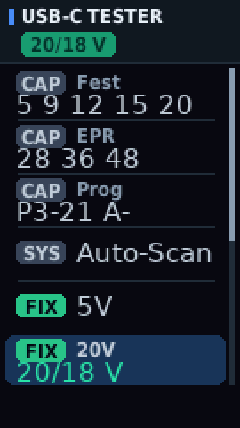
Spannung in Grün, Strom in Gelb, Leistung in Pink, mit Verlauf der letzten Sekunden. Im Hochformat stehen Name und Wert sauber untereinander, im Querformat nebeneinander. Bedient wird mit Drehgeber und zwei Tasten.
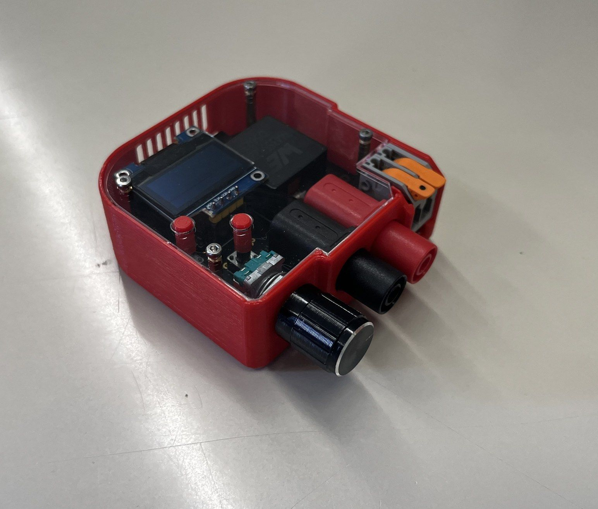
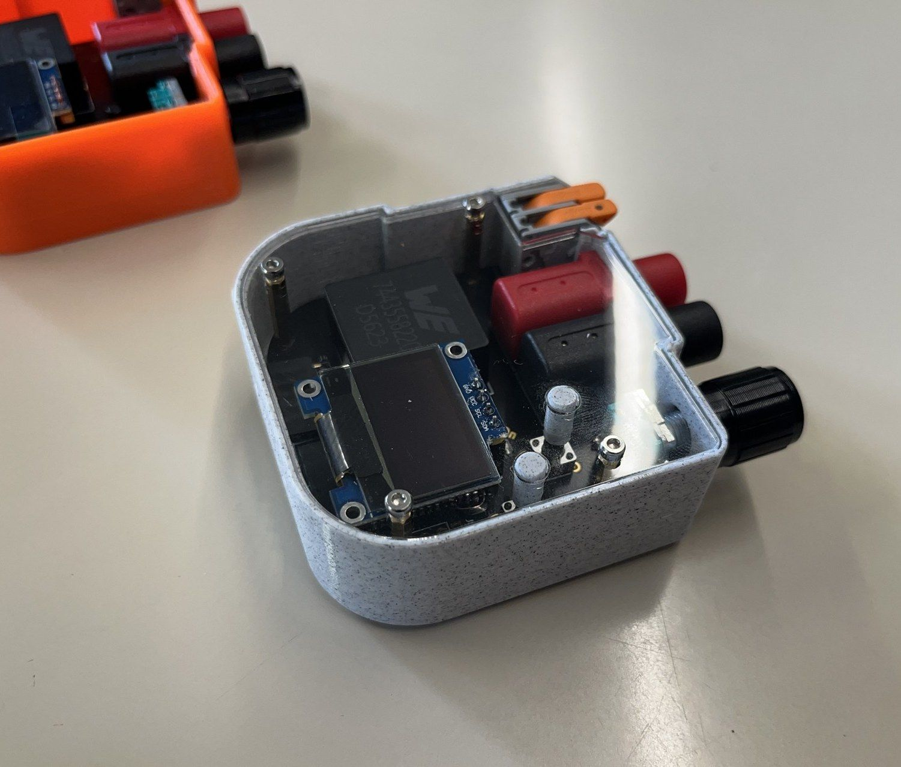
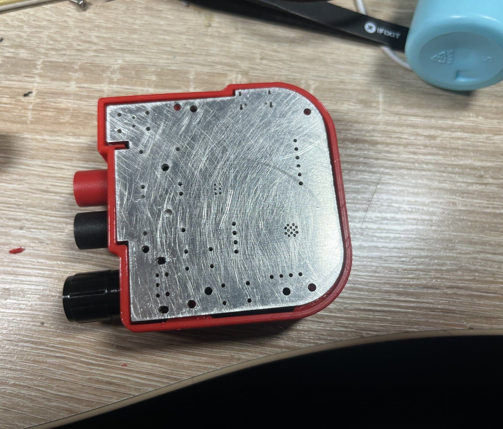
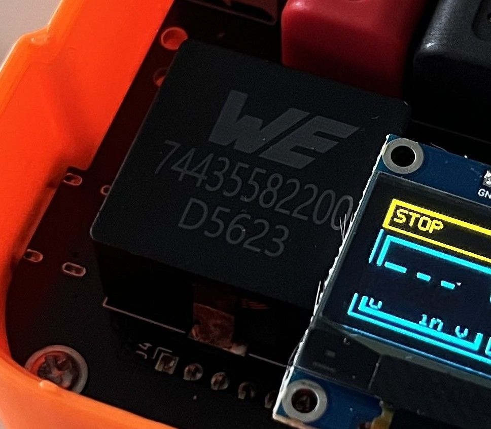
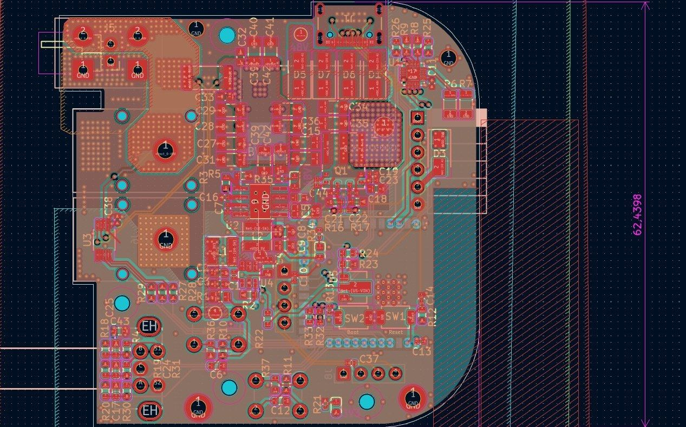
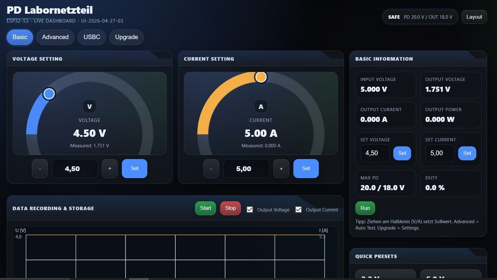
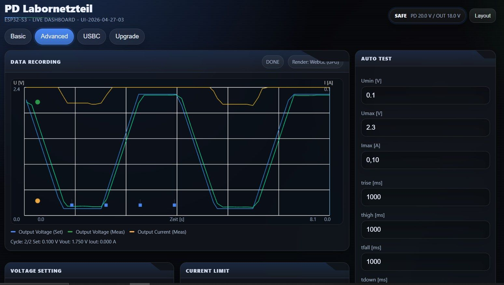
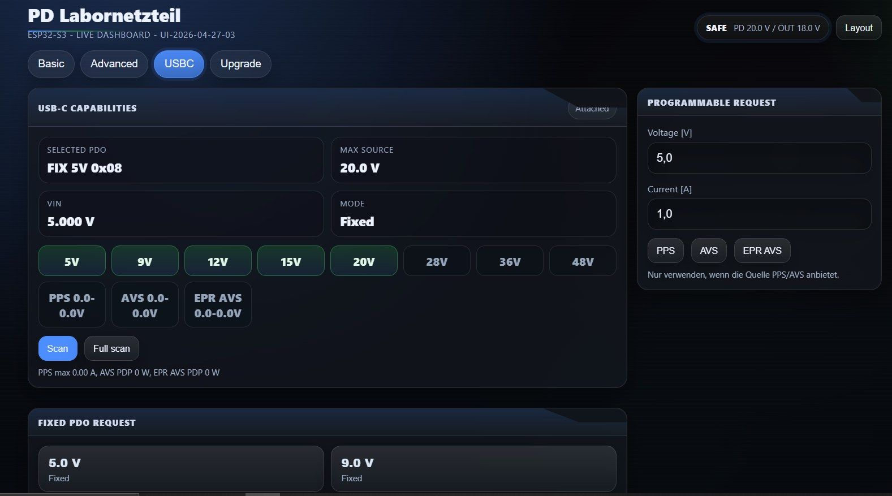
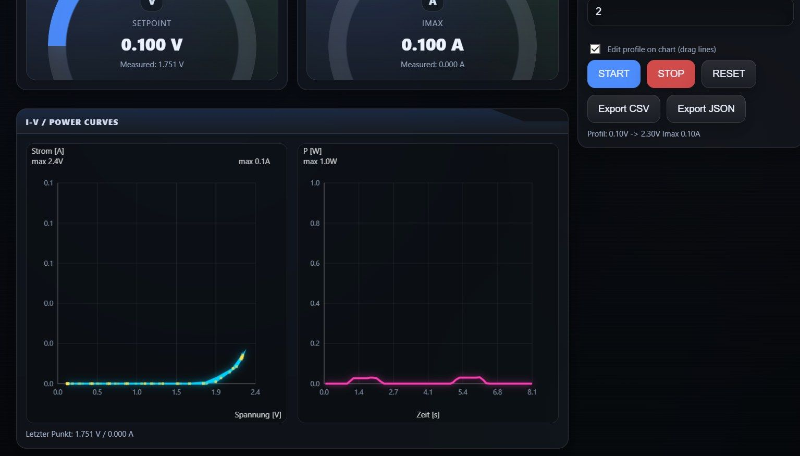
V1 ist aufgebaut, steckt im Gehäuse und ist regelmäßig im Einsatz, auch mit 240 W im Dauerbetrieb. Bevor die Kampagne startet, wird die Hardware für die Serie überarbeitet. Termin und Preise stehen noch nicht fest.
Gerät per USB-C an den Computer, den passenden Knopf drücken und den Port wählen. Sollwerte, Einstellungen und WLAN-Kopplung bleiben erhalten.
Für Module mit 8 MB PSRAM. Der Start-Log zeigt dann „Found 8MB PSRAM device“.
Für Module mit Aufdruck „N16“ ohne „R8“. Die PSRAM-Version startet dort nicht.
Der USB-Dongle für die Weboberfläche am Computer und für den Verbund. Die Kopplung bleibt gespeichert.
N16R8 = mit PSRAM, N16 = ohne.